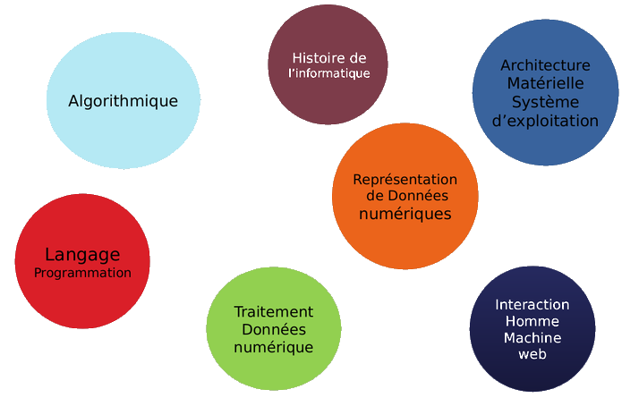
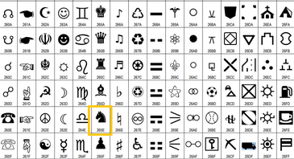
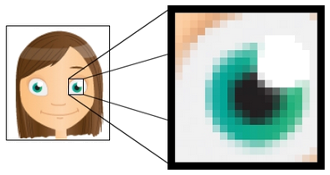
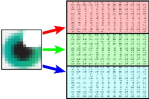
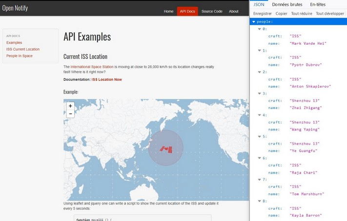
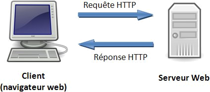
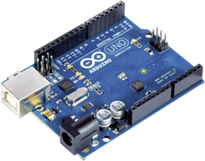
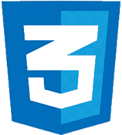
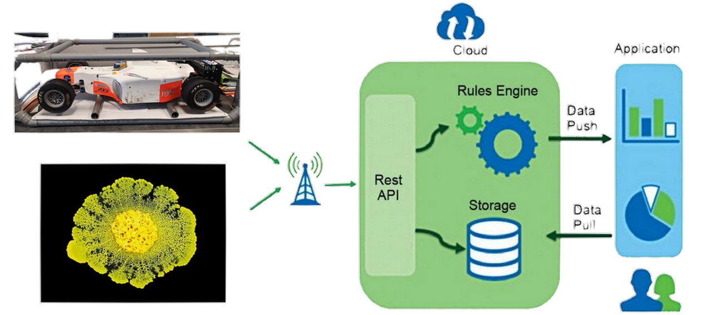
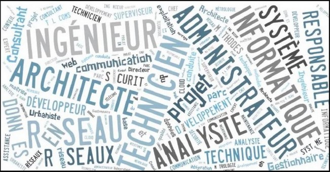

Spécialité NSI
Numérique & Sciences Informatiques
NSI ?
Pourquoi choisir NSI ?
Le numérique est présent dans tous les secteurs d’activités et même dans notre quotidien.
Le choix de la spé NSI est donc pertinent :
- évidemment, pour celles et ceux qui envisagent une carrière dans l’informatique.
- mais aussi, pour celles et ceux qui souhaitent acquérir une compétence forte en informatique sans en faire le centre de leur projet professionnel.
Les programmes
Les programmes de Première et de Terminale NSI sont articulés autour de 7 thèmes (source: Eduscol)

Histoire de l’informatique:
Représentation des données numériques:
  
Traitement des données numériques:

Interaction entre l’homme et la machine sur le Web:

Architecture matérielle & système d’exploitation:


Langages de programmation:


Algorithmique:
Décrire & organiser des règles opératoires permettant de répondre à une problématique.
Projets & Concours
Activités pratiques & mini projets :
Projets 2022 :

Concours:
Construire son Projet Professionnel autour de la NSI
Etudes postbac
- Classes préparatoires (CPGE) dont la nouvelle MP2I
- Ecoles d’ingénieurs à dominante informatique (ENSI, ISEN, INSA, ESIR, SUP Info, etc.)
- Licences universitaires en sciences et technologies (en particulier les licences “info” & “maths/info”)
- BUT (Informatique, R&T, STID, GEII)
- BTS (“Systèmes Numériques”, “Services Informatiques aux Organisations”)
Débouchés professionnels
Une formation en informatique sera un atout pour trouver un emploi
dans un monde professionnel en pleine révolution digitale. 
enquête
“Talents du Numérique”